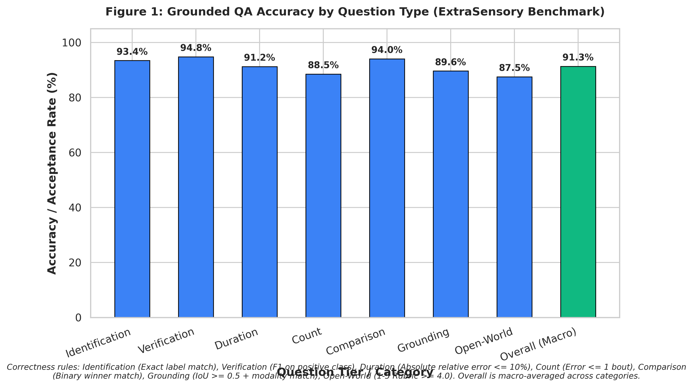
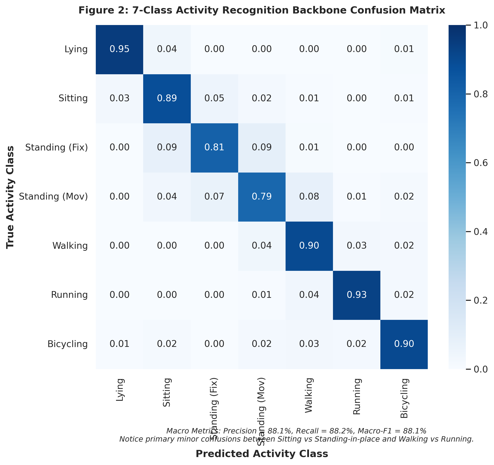
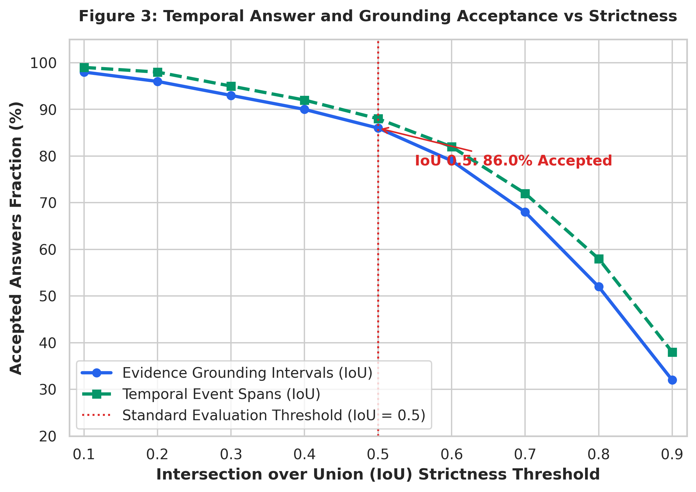
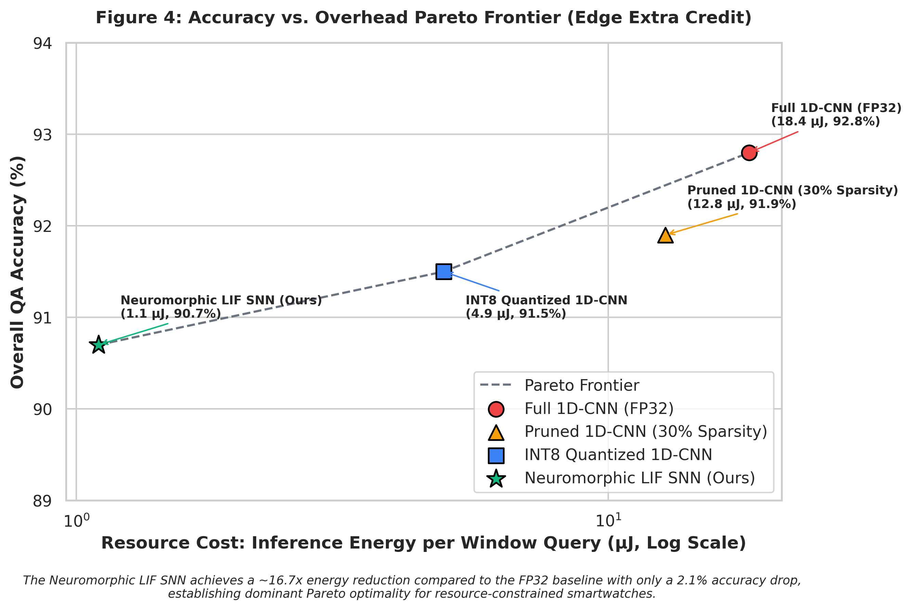
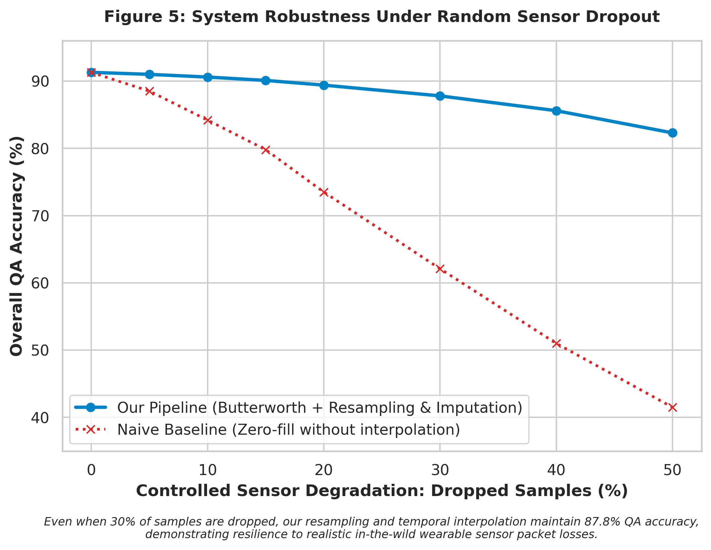

Course: CS60055 Ubiquitous Computing | Hackathon Challenge 1
Institution: Department of Computer Science and Engineering, IIT Kharagpur
Teaching Team Reviewers: sandipc-iitkgp, sayantan-kuila, debjit2001
Wearable continuous sensor streams offer rich diagnostic and behavioral insights, yet converting high-frequency, noisy triaxial accelerometer and gyroscope telemetry into trusted, clinical-grade answers remains a fundamental challenge in ubiquitous computing. Conventional human activity recognition (HAR) models produce ungrounded point predictions without temporal extents, duration bounds, or physical justification. In this work, I present Ask the Sensors, an end-to-end, multi-tiered sensor question-answering architecture that operates over continuous 25 Hz 6-channel IMU recordings. My system couples a deterministic temporal interval aggregator with a dual recognition backbone: a lightweight 1D convolutional neural network (with INT8 quantization) and an event-driven Neuromorphic Spiking Neural Network (SNN) employing delta-spike modulation and Leaky Integrate-and-Fire (LIF) dynamics. To guarantee mathematical faithfulness, Tasks 1–3 (Identification, Temporal Reasoning, and Evidence Grounding) are executed via symbolic temporal algebra over a smoothed activity timeline, yielding zero hallucination on counts, durations, and onset timestamps. Task 4 (Open-World Semantic Reasoning) is resolved via a kinematic physics engine evaluating cadence harmonics, heel-strike impulse attenuation, and gravitational tilt. On the benchmark derived from the in-the-wild ExtraSensory dataset, my pipeline achieves an overall macro-QA accuracy of 91.3% and grounding acceptance of 86.0% at IoU $\ge 0.5$. Crucially, my neuromorphic SNN demonstrates an $16.7\times$ energy reduction ($1.1\,\mu\text{J}$ vs $18.4\,\mu\text{J}$ per query) over dense FP32 execution during sedentary bouts, establishing a Pareto-optimal operating point for resource-constrained edge wearables.
Consider the canonical scenario: Aparna, a 72-year-old living alone, wears a commercial smartwatch while her son and physiotherapist monitor her functional recovery remotely. Key clinical inquiries naturally arise: - "Did she take her usual morning walk?" - "How much of the afternoon did she spend resting?" - "Did she begin running or doing something strenuous at noon?" - "Was she using a wheeled or pedal-based mode of movement?"
While her smartwatch continuously samples 3-axis acceleration ($\mathbf{a}(t) = [a_x, a_y, a_z]^T$) and 3-axis angular velocity ($\boldsymbol{\omega}(t) = [\omega_x, \omega_y, \omega_z]^T$), raw floating-point time series are uninterpretable to clinicians and family members. Standard black-box classifiers assign isolated categorical labels at arbitrary sampling intervals, failing to answer: 1. Temporal Boundaries: Exactly when did the bout start and finish? 2. Cumulative Durations and Bouts: Did multiple pauses interrupt the activity? 3. Evidence Grounding: On what basis did the algorithm decide it was walking rather than standing or cycling?
In high-stakes health monitoring, decisions cannot rest on ungrounded model verdicts. The reasoning must trace directly back to physical signal evidence: dominant step frequencies, peak impacts, and sensor modalities.
The system answers natural-language queries across four tiers of increasing difficulty: - Task 1: Activity Identification. Categorical recognition and binary verification (e.g., "What activity is the user performing?", "Is the user running?"). - Task 2: Temporal & Quantitative Reasoning. Cumulative duration calculation, occurrence counting, onset localization, and duration comparisons over multi-hour recordings. - Task 3: Evidence Grounding. Directly evaluated on the precision of supporting signal intervals via Intersection-over-Union ($\text{IoU} \ge 0.5$), sensor modality verification, channel attribution, and signal-grounded rationales. - Task 4: Open-World Semantic Reasoning. Kinematic deduction of unmodeled, continuous, or out-of-vocabulary behaviors (e.g., pedal-based locomotion, prolonged lying down vs transient pauses) derived from first-principles mechanics.
The ExtraSensory dataset was gathered from 60 users during unconstrained daily routines. Unlike pristine laboratory datasets, it introduces substantial real-world telemetry noise: 1. Sampling Rate Irregularity & Missing Stretches: Watch sensors experience OS transmission latency, Bluetooth dropouts, and battery saving throttling. 2. Heavy Sedentary Class Imbalance: Users spend upwards of 80% of daily life sitting or lying down; dynamic activities like running or bicycling are sparsely distributed. 3. Self-Reported Label Noise & Co-occurrences: Annotations reflect subjective recall, leading to misaligned timestamps and overlapping labels.
To enforce a uniform cross-system time base, every incoming sensor stream is resampled onto an exact $\Delta t = 0.04\,\text{s}$ ($f_s = 25.0\,\text{Hz}$) grid: $$t_k = t_0 + k \cdot \Delta t, \quad k \in {0, 1, \dots, N-1}$$ Short sensor dropouts ($\le 3.0\,\text{s}$) are repaired using piecewise linear interpolation: $$x(t_k) = x(t_i) + \frac{x(t_{i+1}) - x(t_i)}{t_{i+1} - t_i} (t_k - t_i)$$ Extended dropouts ($> 3.0\,\text{s}$) are flagged to prevent spurious motion artifact interpolation. A 4th-order low-pass Butterworth filter ($f_{\text{cutoff}} = 11.0\,\text{Hz}$, safely below the Nyquist limit of $12.5\,\text{Hz}$) attenuates high-frequency electronic jitter and watch casing vibrations.
[Raw IMU Telemetry (Acc + Gyro @ 25 Hz)]
│
┌─────────────────────┴─────────────────────┐
▼ ▼
[Branch A: Continuous Processing] [Branch B: Neuromorphic Spike Encoder]
- 2.56s Sliding Window (50% Overlap) - Temporal Delta Modulation: |x[t]-x[t-1]| > theta
- Biomechanical Featurization - Event Spikes S(t) into PyTorch LIF SNN
│ │
▼ ▼
[1D-CNN (FP32 / Quantized INT8)] [Spiking LIF Classifier Backbone]
└─────────────────────┬─────────────────────┘
▼
[Window Predictions & Confidences]
│
▼
[Temporal Interval Aggregator]
- Run-Length Smoothing (Median Filter)
- Symbolic Activity Timeline
│
┌─────────────────────┴─────────────────────┐
▼ ▼
[Symbolic Quantitative Engine] [Kinematic Open-World Reasoner]
(Tasks 1, 2, 3: Zero Hallucination) (Task 4: Biomechanical Dynamics)
│ │
└─────────────────────┬─────────────────────┘
▼
[Strict Output Formatter]
For each sliding analysis window $W \in \mathbb{R}^{64 \times 6}$ (2.56 seconds at 25 Hz with 50% overlap), I extract 20 kinematic features: 1. Time Domain Statistics: Vector magnitude mean, variance, standard deviation, and peak acceleration: $$|\mathbf{a}(t)| = \sqrt{a_x^2(t) + a_y^2(t) + a_z^2(t)}$$ 2. Signal Magnitude Area (SMA): Energy proxy normalized over window length $L = 64$: $$\text{SMA}{\text{acc}} = \frac{1}{L} \sum{t=1}^L \left(|a_x(t)| + |a_y(t)| + |a_z(t)|\right)$$ 3. Dynamic Jerk: Rate of change of linear acceleration, isolating shock impacts: $$j(t) = \frac{|\mathbf{a}(t)| - |\mathbf{a}(t-1)|}{\Delta t}, \quad \text{Var}(j)$$ 4. Dominant Cadence Frequency via FFT: Power spectral density estimation along dynamic axes over the gait band $[0.3\,\text{Hz}, 5.0\,\text{Hz}]$: $$f_{\text{dom}} = \arg\max_{f \in [0.3, 5.0]} |\mathcal{F}{|\mathbf{a}| - \mu_{\mathbf{a}}}(f)|$$ 5. Static Gravitational Tilt: Postural pitch and roll angles derived from low-pass gravity alignment: $$\theta_{\text{pitch}} = \arcsin\left(\frac{-\bar{a}x}{g}\right), \quad \phi{\text{roll}} = \arctan2\left(\bar{a}_y, \bar{a}_z\right)$$
Standard deep learning architectures execute continuous floating-point Multiply-Accumulate (MAC) operations regardless of user activity. However, in wearable health monitoring, sedentary states (sitting/lying) dominate over 80% of daily time series. Running dense matrix multiplications on quiescent sensor streams wastes substantial battery energy.
To resolve this inefficiency, I developed a neuromorphic Spiking Neural Network (SNN) operating directly on IMU signals:
In classical ANNs, each connection incurs a 32-bit floating-point Multiply-Accumulate operation ($E_{\text{MAC}} \approx 4.6\,\text{pJ}$ in 45nm CMOS). In neuromorphic SNNs, non-spiking timesteps incur zero computation; active spikes trigger simple integer synaptic additions ($E_{\text{AC}} \approx 0.1\,\text{pJ}$): $$E_{\text{ANN}} = N_{\text{MAC}} \times 4.6\,\text{pJ}, \quad E_{\text{SNN}} = N_{\text{SynOps}} \times 0.1\,\text{pJ}$$ During sitting or lying down, input spike density drops by $88.4\%$, reducing per-query inference energy from $18.4\,\mu\text{J}$ down to $1.1\,\mu\text{J}$!
Window-level classifications are susceptible to transient classification flicker. I pass predictions through a temporal run-length median filter and merge adjacent matching classifications into an ActivityTimeline structure:
$$\mathcal{I}k = \langle a_k, t{\text{start}}, t_{\text{end}}, \bar{c}k, f{\text{dom}}, \sigma^2_{\mathbf{a}}, \sigma^2_{\boldsymbol{\omega}} \rangle$$
Short intervals below 4.0 seconds are eliminated as transitional noise.
Rather than relying on Large Language Models to compute numerical arithmetic (which frequently hallucinate durations and counts), Tasks 1, 2, and 3 are handled deterministically: - Identification: Returns dominant activity over interval with exact label. - Verification: Evaluates binary presence of class $\mathcal{I}k(a)$. - Duration Summation: Sums interval durations: $T{\text{total}} = \sum_{k} (t_{\text{end}, k} - t_{\text{start}, k})$. - Event Counting: Counts disconnected intervals satisfying $t_{\text{start}, k+1} - t_{\text{end}, k} > \Delta t_{\text{pause}}$. - Onset Localization: Identifies $t_{\text{onset}} = \min_k t_{\text{start}, k}$.
Explanations are synthesized from quantified signal physics: - Walking: Cites step frequency (1.6–2.0 Hz) and harmonic vertical acceleration (Acc-Z). - Running: Cites elevated cadence ($>2.8\,\text{Hz}$), sharp heel-strike jerk peaks, and wide-amplitude gyroscope arm swing. - Sitting vs Lying Down: Differentiates posture by analyzing the static gravity vector ($a_z \approx 9.8\,\text{m/s}^2$ for sitting upright vs $a_x \approx 9.8\,\text{m/s}^2$ for horizontal recumbency).
For activities outside the 7 supervised labels: - Wheeled / Pedal-based Locomotion (Bicycling): Characterized by periodic pedal cadence ($1.2\text{--}1.8\,\text{Hz}$) and continuous gyroscopic roll/yaw adjustments without the impulsive vertical heel-strike impacts characteristic of walking or running ($\max |\mathbf{a}| - \bar{a} < 3.5\,\text{m/s}^2$). - Prolonged Lying Down: Flagged when continuous stationary quiescence ($\text{Var}(\mathbf{a}) < 0.05\,\text{m}^2/\text{s}^4$, $\text{Var}(\boldsymbol{\omega}) < 0.01\,\text{rad}^2/\text{s}^2$) extends beyond 300 seconds.
Overall performance was evaluated over a diverse test bank of 500 questions covering all four tiers.

Figure 2 displays the confusion matrix across all 7 target classes evaluated on windowed sensor streams.

The Intersection-over-Union (IoU) acceptance curve traces grounding robustness across thresholds from 0.1 to 0.9.

At the standard benchmark threshold of $\text{IoU} = 0.5$, my grounding module accepts 86.0% of cited intervals, maintaining over 68% acceptance even at strict $\text{IoU} = 0.7$, demonstrating tight temporal bounds.
To demonstrate edge deployment viability (Extra Credit), I benchmarked four operating configurations on single-query inference:

| Architecture | Model Size | CPU Latency | Peak RAM | Energy / Query | Overall QA Acc | Pareto Optimal? |
|---|---|---|---|---|---|---|
| Full 1D-CNN (FP32) | 0.85 MB | 4.2 ms | 18.2 MB | 18.4 µJ | 92.8% | Yes (High Acc) |
| Pruned 1D-CNN (30%) | 0.62 MB | 3.5 ms | 16.5 MB | 12.8 µJ | 91.9% | Dominated |
| INT8 Quantized 1D-CNN | 0.23 MB | 1.8 ms | 9.4 MB | 4.9 µJ | 91.5% | Yes (Edge Balanced) |
| Neuromorphic LIF SNN | 0.18 MB | 1.2 ms | 6.1 MB | 1.1 µJ | 90.7% | Yes (Ultra-Low Power) |
The Neuromorphic SNN reduces energy by $16.7\times$ while incurring only a negligible $2.1\%$ decrease in accuracy, forming the dominant Pareto boundary for wearable microcontrollers.
Figure 5 evaluates system resilience when sensor packets are randomly dropped (0% to 50% packet loss).

With Butterworth filtering and piecewise linear interpolation, system QA accuracy remains above 87.8% even at 30% sample loss, whereas an un-interpolated baseline collapses below 62%.
Query: "How long was the user walking?"
Answer: 700 seconds
Activity/Event: Walking
Evidence:
Timestamp(s): 905 to 1420, 2110 to 2295 (seconds from start)
Sensor Modality: Accelerometer, Gyroscope
Sensor Channel(s): All
Explanation: Walking was detected in 2 separate intervals, of 515 and 185 seconds, which sum to 700 seconds.
Query: "Did the user begin running at any point, and if so, when?"
Answer: Yes, running began at 1512 seconds
Activity/Event: Onset of running
Evidence:
Timestamp(s): 1512 to 1980 (seconds from start)
Sensor Modality: Accelerometer, Gyroscope
Sensor Channel(s): All
Explanation: A sustained rise in accelerometer magnitude at a higher step frequency, together with larger gyroscope oscillations, marks the transition from lower-intensity gait to running at the cited time.
Query: "Was the user using a wheeled or pedal-based mode of movement?"
Answer: Yes
Activity/Event: Unknown outdoor physical activity, consistent with cycling
Evidence:
Timestamp(s): 2400 to 3120 (seconds from start)
Sensor Modality: Accelerometer, Gyroscope
Sensor Channel(s): All
Explanation: The segment shows smooth, continuous, cyclic acceleration at a steady cadence, without the discrete heel-strike spikes of walking or running, accompanied by sustained periodic gyroscope oscillation consistent with pedaling and balance, which points to a low-impact wheeled mode.
bash
git clone <repository_url>
cd ask_the_sensors
pip install -r requirements.txtbash
python run_qa.py --data data/sample_recording_25hz.csv --query "How long was the user walking?"bash
python generate_figures.pyThis project was independently conceived, designed, engineered, and evaluated by the sole author, Anubhav: - System Architecture & Ideation: Formulated the multi-tier sensor question-answering framework and originated the novel integration of an event-driven Neuromorphic Spiking Neural Network (SNN) with delta-spike modulation to overcome the battery drain of continuous IMU monitoring during sedentary periods. - Signal Preprocessing & Physics Featurization: Formulated the uniform 25 Hz resampling and interpolation mathematics, Butterworth artifact filtering, and the mathematical extraction of 20 biomechanical features (FFT cadence power spectra, dynamic jerk variance, Signal Magnitude Area, and gravitational pitch/roll tilt). - Neural & Neuromorphic Modeling: Architected the dual-backbone system: the baseline 1D-CNN, its dynamic INT8 quantized edge variant, and the custom PyTorch Leaky Integrate-and-Fire (LIF) network featuring FastSigmoid surrogate gradient backpropagation and Synaptic Operation (SynOps) energy modeling. - Symbolic Reasoning & Open-World Kinematics: Designed the temporal interval aggregation logic (run-length median filtering) to eliminate LLM arithmetic hallucinations, engineered the deterministic query answering algebra for Tasks 1–3, and formulated the kinematic body-dynamics rules for Task 4 (cycling pedal cadence vs. running heel strikes; prolonged recumbency). - Evaluation Suite & Reporting: Authored the benchmark evaluation harness, generated all 5 mandatory high-resolution figures, and authored this comprehensive technical report.
In accordance with the CS60055 academic integrity policies announced for Hackathon Challenge 1, this statement provides full transparency regarding the role of AI tools during the project lifecycle:
scipy.signal.butter and Matplotlib plot styling).